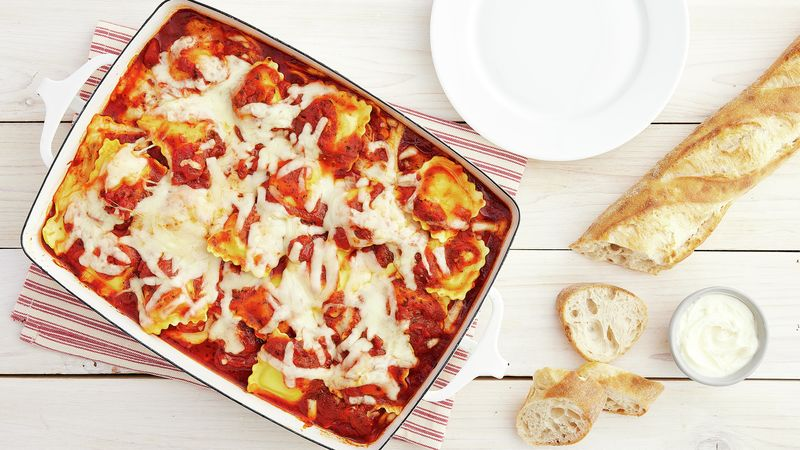

Main Page
If cheese ravioli is one of your go-to meals at your favorite Italian eatery, this Easy Ravioli Bake is sure to compete. Get restaurant quality at home with this no-fuss baked ravioli recipe. Only ten minutes to prep and using simple ingredients you have on hand, this baked ravioli is as easy as it gets. Using frozen ravioli means you can get right to assembling your baked ravioli for a quick, yet impressive, family dinner.

Ingredients:
- 1 jar (25.5 oz) Muir Glen™ organic pasta sauce (any variety)
- 1 package (25 to 27 1/2 oz) frozen cheese-filled ravioli
- 2 cups shredded mozzarella cheese (8 oz)
- 2 tablespoons grated Parmesan cheese
Steps
- Heat oven to 350°F. Spray bottom and sides of rectangular baking dish, 13x9x2-inches, with cooking spray.
- Spread 3/4 cup of the pasta sauce in baking dish. Arrange half of the frozen ravioli in single layer over sauce; top with half of the remaining pasta sauce and 1 cup of the mozzarella cheese. Repeat layers once, starting with ravioli. Sprinkle with Parmesan cheese.
- Cover with foil; bake 40 minutes. Remove foil; bake 15 to 20 minutes or until bubbly and hot in center. Let stand 10 minutes before serving.
Return to top